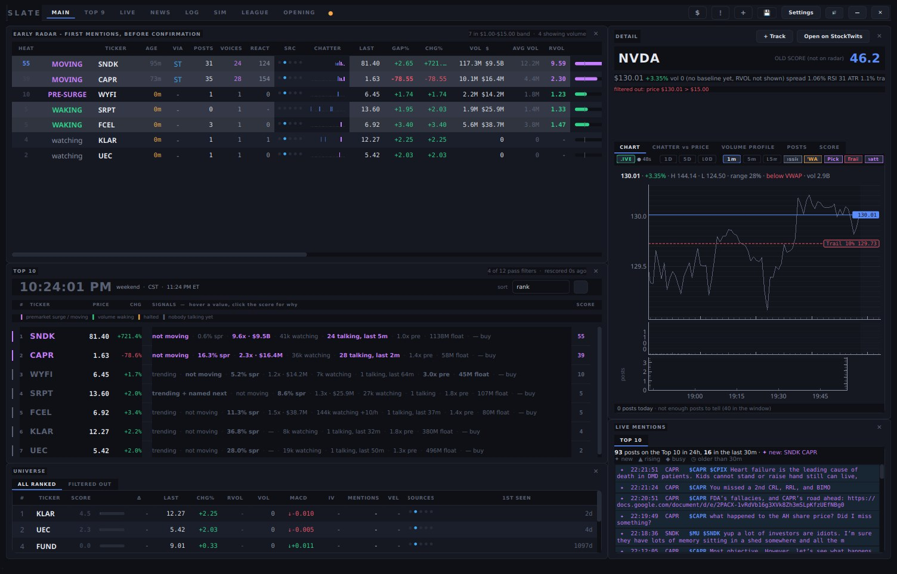

A single-window trading terminal. It watches social feeds for the earliest mention of a ticker, checks it against your parameters, and keeps a live Top 10 ranked by how well it fits your strategy right now.

The copy shared here is read-only. It connects to market-data and social endpoints and nothing else, and has no order-entry code in it. It hands you a shortlist; you place your own trades.
The setup it hunts for is a hyped ticker between $1.50 and $15 that runs 50% or more in the first hour after the open. Catching one of those means seeing the hype before the bell, which means watching where the hype actually starts rather than where it gets reported.
A collector runs 24/7 in the background pulling from Reddit, StockTwits and a handful of other public feeds, timestamping the first mention of every symbol it sees. By 6am there's an overnight picture waiting: what got talked about, where, how fast it spread, and how many distinct platforms picked it up.
It does not predict, and it doesn't pretend to. It ranks how closely something resembles setups that have run before. A hit-rate tab keeps score on whether that resemblance actually pays, which is the only honest way to know if the ranking is worth anything.
The interesting piece is the premarket participation ratio. Raw premarket volume would be the ideal signal, but the free feeds don't publish it cleanly, so the score is built from what is available and weighted by how many distinct platforms are carrying the name. That one measure does more work than anything else in the ranking before the open.
Market data comes from Schwab where credentials are configured, and falls back to delayed Yahoo data where they aren't. Everything lands in a local SQLite database, so the history is yours and the scoring can be re-run against past days to check whether a tuning change would actually have helped.
The whole thing is tuned from one config.yaml: thresholds,
price band, which subreddits to watch, how much each signal counts toward
the heat score.
Linux, with Python 3.11 or newer. Unzip, then run the line below; the first run installs what it needs. SHARED.md inside the zip covers the email the SEC asks for and the optional Schwab key. Nothing here is financial advice.
./run.sh the window
./install-collector.sh the 24/7 collector, once (optional)